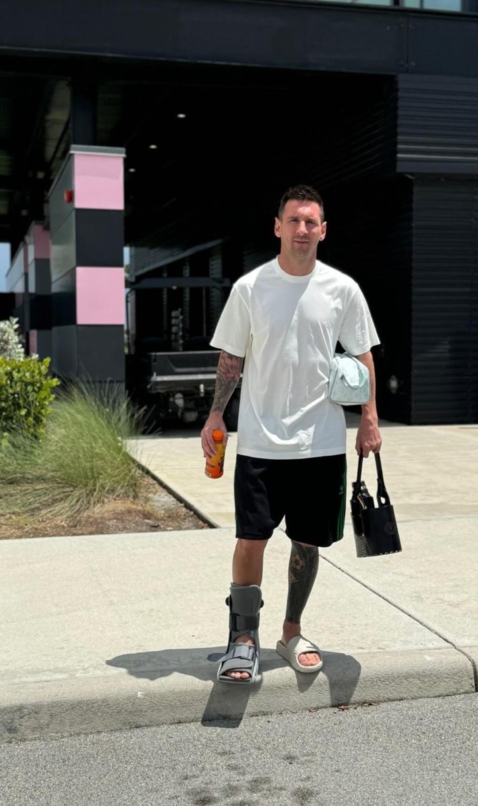

Scaloni dt de la selecion metio 3 combios claves para el triunfo
Tras la lecion del 10 messi los jugadores de la selecion argentina se encontraba motiva por que lo hacian todo por el.
Con un tanto de Lautaro Martínez en el segundo tiempo extra, se impuso por 1-0 a una durísima Colombia y defendió
en Miami el título ganado en el Maracaná. Sin Messi, lesionado en el segundo tiempo, la celeste y blanca está de nuevo en lo más alto del continente..

¿Cómo está Messi de la lesión en el tobillo?

El comunicado del Inter Miami sobre Messi
"Inter Miami CF ha brindado hoy el siguiente reporte médico presentado por Baptist Health sobre la lesión del capitán Leo Messi. Tras una evaluación médica, se
ha determinado que Leo Messi ha sufrido una lesión en los ligamentos del tobillo de su pierna derecha. La disponibilidad del capitán vendrá marcada por revisiones
periódicas y por el desarrollo de su recuperación", reza el comunicado del club de Florida.
¿Cuál es el tratamiento que realiza Messi?
Primero tuvieron que bajar la inflamación: habitualmente se realiza con fisioterapia y reposo deportivo, es decir no correr, trotar y no darle a la pelota.
La recuperación en principio es en base a kinesiología: rehabilitación y fortalecimiento de los músculos que estabilizan el tobillo. Debido al dolor,
está claro que los primeros movimientos serán leves, hasta que haya desinflamación. Puede haber zona media (core), tren superior y otro tipo de ejercicios que
no exijan al pie, dolorido.

¿Que sigue? para el Señor D10S?
- Su pronta recuperación
- Estar a la par de sus compañeros del inter de Miami CF
- Estar listo para las eliminatorias para el mundial 2026